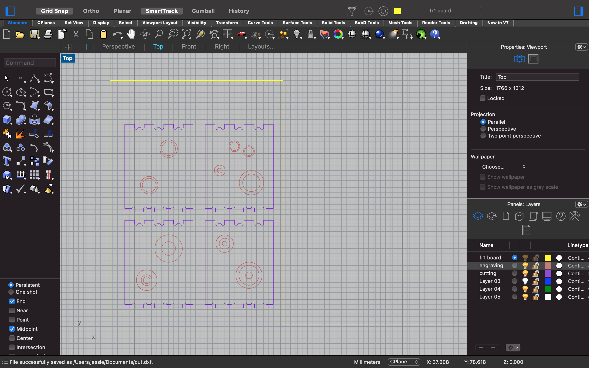

my fourth assignment focuses on cnc milling boxes!
i measured the material using the caliphers. so one board is about 100.04mm by 71mm by 1.35mm and another board is 100.02mm by 70.30mm by about 1.40mm. these informed my designs of the boxes in rhino and i focused on learning the dogbones etc.
following junchao's visual tutorial, i decided to make a paper prototype of the dogbones in order to understand how they interlocked. i measured some of my pieces as 36mm by 28mm so i thought it would be 36mm x 28mm when drawing on top of the rectangle i just drew in rhino.
i decided to follow the pattern i had just set forth and just try to make this happen. i used the circle and rectangle tools to create dogbones. initially i ran into some issues with trimming but realized that it was because i had been using boxes and spheres instead of regular ol' rectangles and circles, which interfered with the software identifying whether to trim the curve or extrusion.
i drew some dogbones. i didn't start adding engraving until junchao suggested that i try creating some simple engraving, which i decided to do so that i could follow his tutorial more easily. later, sara suggested that i could move some parts of the dogbones by 0.25mm so that way they could fit each other more snugly. here is what my design looked like in the end btw!

exporting & importing the 3DM file from rhino 7 into a STL format for kicad was super straightforward (thanks a lot, junchao's tutorial!) and i was able to get started on the milling process using the bantam machine and the bantam software with the gerber files. i separated the engraving and the cutting paths, making sure to properly adjust settings according to junchao's instructions. i headed to the mill, hopeful that maybe this will just work.
......unfortunately, milling didn't go as expected, resulting in a couple of failed milled FR1 boards with just engravings. these two failures were due to the endmills breaking off! nooo.
at this point, i decided to just turn in my homework assignment and hope that we get more 1/32" endmills so that i can finally create a box. maybe i will update this page!!!

so what did i learn from this experience? from this, i learned that milling is way more fun than 3d printing and less cumbersome. i enjoyed learning more about the process and seeing something completed in less time than 3d printing, which would typically take a long time for an impatient jessie. i learned to be courageous and add engraving to the list of things i could do instead of going for straight cuts (which i was originally going for). i also learned a couple of things: (1) do NOT use the thick double-sided tape as that might cause the endmill to break off and (2) ALWAYS inspect the endmills to make sure that they are actually 1/32"!!!! and solid! flat on the bottom! it was frustrating not knowing why the endmills broke, so i hope to be able to troubleshoot this.
would i mill again? i guess so! i feel a bit more confident with this process compared to the stress i underwent last week when i had to figure out how to level the bed and 3d print something.
[RHINO FILE 3DM] which was later converted to a STL and uploaded to kicad and then converted into gerber files (engraving and cutting paths separately) and then uploaded as new files on bantam tools that would then translate to the machine. not sure if i need to upload the rest of the programs.
i am in particular awe and gratitude to the amazing TA junchao for creating such a wonderful visual tutorial that really helped me understand the steps of the milling process. junchao helped me a lot with the assignment. i should also thank sara cagle for coming to help me figure out how to use the milling machine and the software (bantam tools), cleaning up, and teaching me a cool trick in rhino so that i could enlarge certain lines so that pieces could fit each other snugly, as well as a staff member (a woman wearing glasses) who walked me through using the milling machine step by step.